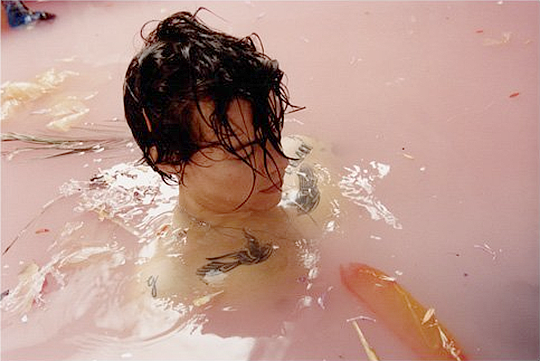
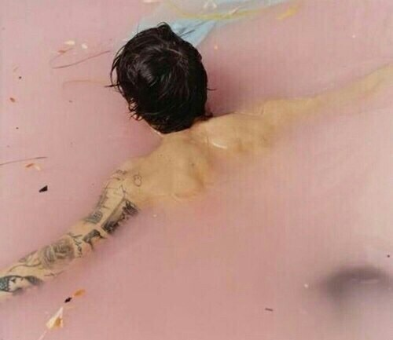
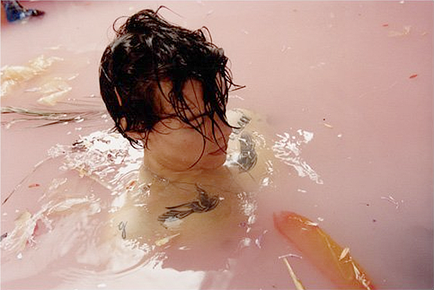
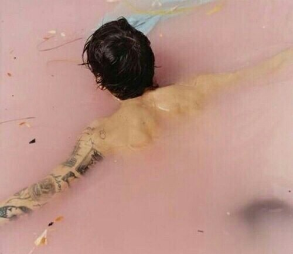
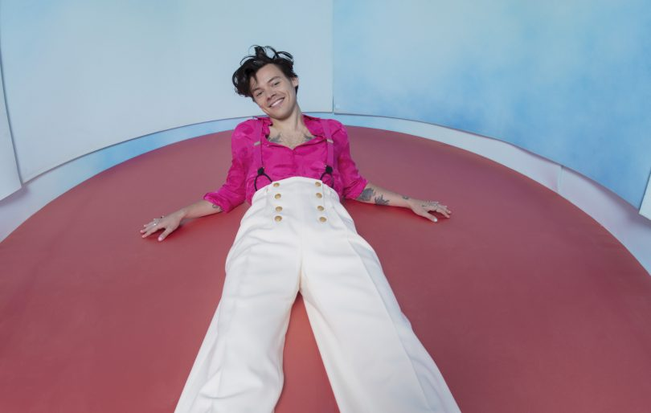
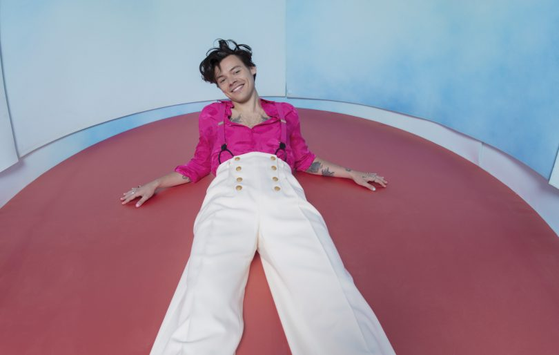

Harry Edward Styles, é um cantor, compositor e ator inglês. Tem 27 anos e nasceu em 01/02/1994. Sua carreira musical começou no ano de 2010 como um concorrente em uma série de competição musical britânica The X Factor. Após sua eliminação no início, ele foi trazido de volta para se juntar à banda One Direction, que passou a se tornar um das boy bands recordistas em vendas.
Sua passagem na One Direction, foi o ponto de partida para que sua carreira de cantor começasse, como dito antes, One Direction
foi recordista em vendas. Lotavam show em arenas enormes em menos de 5 minutos, era Realmente um sucesso. Mas a banda "acabou" em 2015, fazendo que todos os integrantes seguissem suas
carreiras solos.
Assim como todos os integrantes, Harry seguiu sua carreira, lançando em 2017 seu primeiro álbum solo (Harry Styles Self-Title). E com ele recebeu certificado de platina nos EUA, enquanto seu primeiro single, "Sign of the Times", alcançou o topo da UK Singles Chart.
Junto com o álbum fez sua world tour chamada live on tour, em 2017/2018.
  
 
Em 2019, Harry lançou o seu segundo álbum chamado Fine line. estreou no topo da Billboard 200 com a maior estreia de vendas de um artista masculino inglês nos EUA
e foi listado entre os "500 Maiores Álbuns de Todos os Tempos" pela Rolling Stone em 2020. Seu quarto single, "Watermelon Sugar", alcançou o topo da Billboard Hot 100 dos EUA. Foi o maior sucesso no mundo inteiro.
Ao longo da sua carreira, Styles recebeu vários prémios, incluindo um Grammy, um Brit Award, um AMA, dois ARIA e um Billboard Music Award.
Além da sua carreira musical e no cinema, o Harry é conhecido pelo o seu estilo marcante, sendo que foi o primeiro homem a aparecer na revista Vogue.
 
